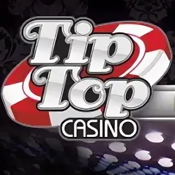

Разнообразие механик
Слоты и автоматы закрывают разные предпочтения: от спокойных классик до динамичных форматов с бонусными раундами.
Страница для интента tiptop casino играть, tip top casino играть, типтоп казино играть и тип топ казино играть. Здесь мы описываем, как выглядит старт в игровом разделе, чем полезны фильтры по провайдерам, и как связать игру с бонусами и регистрацией.
Также раскрываем запросы tiptop casino online, tip top casino online, типтоп казино онлайн и онлайн казино типтоп: онлайн‑игра предполагает стабильное соединение, понятный интерфейс ставок и дисциплину по банкроллу.

Игровой раздел — сердце опыта Tiptop Casino. Пользователи, которые набирают tiptop casino игровые автоматы или tiptop casino слоты, обычно хотят быстро найти любимую механику: классические линии, Megaways, покупку бонуса, высокую или низкую волатильность. Хороший каталог помогает сортировкой и понятными подсказками, а не только «горячими» обложками.
Перед первой сессией полезно прочитать отзывы и обзор: так проще понять, насколько стабильно грузятся игры на мобильных сетях и как ведёт себя интерфейс при длительных сессиях.
Онлайн‑казино в пользовательском смысле — это каталог RNG‑слотов, настольных симуляторов и live‑столов (если они доступны на площадке). Для бренда Tip Top Casino важно, чтобы переход от рекламного обещания к реальной игре был прозрачен: видны лимиты ставок, понятны правила раунда, доступна справка по выплатам.
Слоты отличаются математикой: RTP и волатильность задают ощущение «плавности» или «рывковости» сессии. Новичку разумнее начинать с небольших ставок и знакомства с таблицей выплат, даже если игра кажется интуитивной.
Отдельная тема — ответственная игра: лимиты времени и депозита, самоисключение, напоминания. Это не «мешает веселью», а предотвращает импульсивные решения в усталом состоянии.
Типичный сценарий: вход → выбор категории → запуск слота → настройка ставки → спин. Если активен бонус, часть игр может быть ограничена правилами отыгрыша — это нормальная практика, и её нужно проверять заранее в разделе бонусов.
Технически игры подгружаются как модули провайдеров. Если соединение нестабильно, могут возникать обрывы сессии; обычно помогает перезапуск роутера, смена DNS или переход на другое устройство. На смартфоне иногда стабильнее приложение — см. скачивание.
Если основной домен недоступен, используйте зеркало, но после запуска игры снова проверьте, что баланс и история совпадают с ожиданиями.
Слоты и автоматы закрывают разные предпочтения: от спокойных классик до динамичных форматов с бонусными раундами.
Форматы tiptop casino online удобны тем, что не требуют установки для старта в браузере.
Игра и бонусная программа работают вместе, если заранее прочитать условия и выбрать подходящие игры.
Ещё одно преимущество онлайн‑каталога — скорость сравнения: можно коротко протестировать несколько слотов и выбрать стиль, который подходит именно вам, не тратя длинные сессии на «не вашу» математику.
Если вы сравниваете tip top casino online с другими брендами, обратите внимание на скорость вывода, ясность правил и качество фильтров в каталоге. Красивый баннер не заменяет стабильную работу игр на среднем устройстве.
Также полезно иметь план на случай проигрышной серии: заранее определите, после какого порога вы закроете слот, чтобы не пытаться «вернуть» результат эмоционально.
Для доступа к платформе в нестабильных сетях комбинируйте официальный сайт и мобильные сценарии из раздела скачивания.
Высокая волатильность чаще даёт редкие крупные события, низкая — более частые мелкие выплаты. Выбор зависит от стиля и бюджета сессии.
Обычно для реальной игры нужен аккаунт. Демо‑режим может быть доступен у отдельных провайдеров — зависит от политики площадки.
У отыгрыша часто есть список разрешённых игр и вклад вейджера. Читайте правила на странице бонусов.
Не спамьте кнопками: подождите, обновите страницу, проверьте соединение. Если списания выглядят некорректно, обратитесь в поддержку через официальный кабинет.
Нет. RNG‑слоты не предсказуемы стратегиями. Лучше управлять банкроллом и временем, а не «секретными схемами».
На странице отзывов собраны нейтральные критерии оценки площадки.